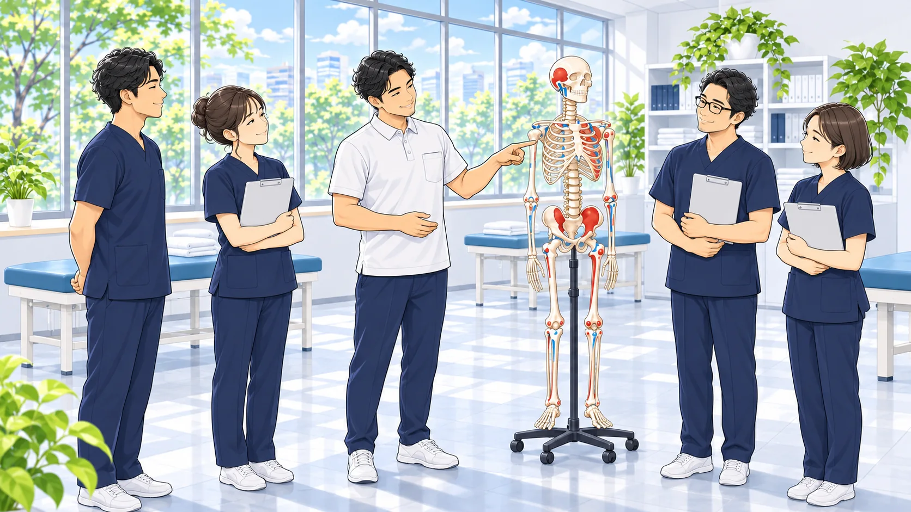
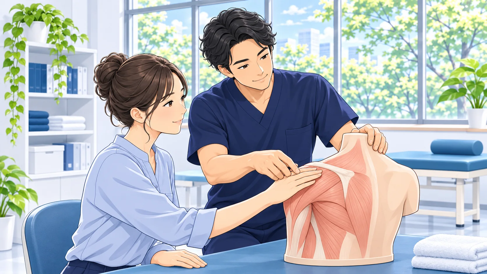

本格的な解剖生理学
身体の構造や機能を理解するための基礎を学びます。確かな身体の知識を、施術を考える力につなげます。
学びについて

現場実践型カリキュラム
身体の構造や機能を理解するための基礎を学びます。確かな身体の知識を、施術を考える力につなげます。
未経験の方から独立開業を目指す方まで、レベルに合わせて指導。現場で必要となる施術技術と対応力を身につけます。
身体の状態だけでなく、悩みや生活背景にも目を向け、一人ひとりに合わせて施術を組み立てる力を育てます。
現場で培われた知識と技術を学びます。理解できるまで丁寧に確認し、実践へとつなげます。
知識と経験をつなぐ学習
知識を学ぶ
オンライン学習で時間や場所を選ばず、何度も視聴して理解を深めます。
実技を磨く
単位制の授業を、予約状況に合わせて繰り返し受講。技術を磨きます。
現場を経験する
インターンシップを通じ、教室だけでは得られない対応力を養います。
振り返りを活かす
手の位置や圧の方向、身体の使い方まで講師が確認。その場で修正します。

現場研修
提携治療院でのインターンシップは、各コース100時間。施術だけでなく、受付、カウンセリング、接客、現場での判断まで経験します。

新しい一歩を、ここから。
学び方も、仕事のことも、これからの自分のことも。
まずは気軽に、あなたの目指す未来を聞かせてください。